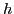
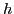
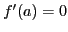
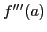

Maxima and minima treated analytically
By making use of the results of the last two sections we
can now give a general discussion of maxima and minima of
functions of a single independent variable.
Given the function  . Let  be a positive number as small
as we please; then the definitions given in §8.4,
may be stated as follows:
If, for all values of
. Let  be a positive number as small
as we please; then the definitions given in §8.4,
may be stated as follows:
If, for all values of  different from
different from  in the interval
,
in the interval
,
then is said to be a maximum when  .
If, on the other hand,
.
If, on the other hand,
then is said to be a minimum when .
Consider the following cases:
- I
- Let
.
From (13.5), [§13.2],
replacing b by x and transposing f(a),
Since
, and  is assumed as continuous,
may be chosen so small that will have the same sign
as for all values of in the interval
.
Therefore has the same sign as (Chap. 3).
But changes sign according as is less or greater than .
Therefore, from (13.12), the difference
will also change sign, and, by (13.10) and (13.11),
will be neither a maximum nor a minimum. This result
agrees with the discussion in §8.4, where it was
shown that for all values of for which is a maximum
or a minimum, the first derivative must vanish.
is assumed as continuous,
may be chosen so small that will have the same sign
as for all values of in the interval
.
Therefore has the same sign as (Chap. 3).
But changes sign according as is less or greater than .
Therefore, from (13.12), the difference
will also change sign, and, by (13.10) and (13.11),
will be neither a maximum nor a minimum. This result
agrees with the discussion in §8.4, where it was
shown that for all values of for which is a maximum
or a minimum, the first derivative must vanish.
- II
- Let , and
.
From (13.12), replacing
 by and transposing ,
by and transposing ,
Since
, and  is assumed as continuous, we
may choose our interval
so small that
will have the same sign as (Chap. 3).
Also does not change sign. Therefore the second
member of (13.13) will not change sign, and the difference
will have the same sign for all values of in the interval
, and, moreover, this sign will be the same
as the sign of .
It therefore follows from our definitions
(13.10) and (13.11) that
is assumed as continuous, we
may choose our interval
so small that
will have the same sign as (Chap. 3).
Also does not change sign. Therefore the second
member of (13.13) will not change sign, and the difference
will have the same sign for all values of in the interval
, and, moreover, this sign will be the same
as the sign of .
It therefore follows from our definitions
(13.10) and (13.11) that
These conditions are the same as (8.3) and (8.4),
[§8.6].
- III
- Let
, and
.
From (13.9), [§13.3], replacing by
and transposing ,
As before, will have the same sign as . But
changes its sign from  to
to  as increases through .
Therefore the difference
must change sign, and is neither a maximum nor a minimum.
as increases through .
Therefore the difference
must change sign, and is neither a maximum nor a minimum.
- IV
- Let
, and
.
By continuing the process as illustrated in I, II, and III, it is
seen that if the first derivative of which does not vanish for
is of even order (
 ), then13.3
), then13.3
 |
(13.18) |
If the firstderivative of which does not vanish for is of odd order,
then will be neither a maximum nor a minimum.
david joyner
2008-08-11